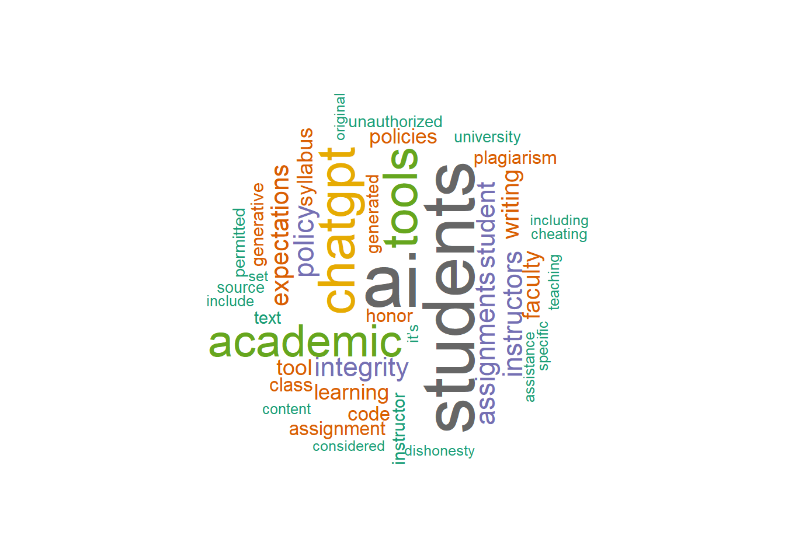
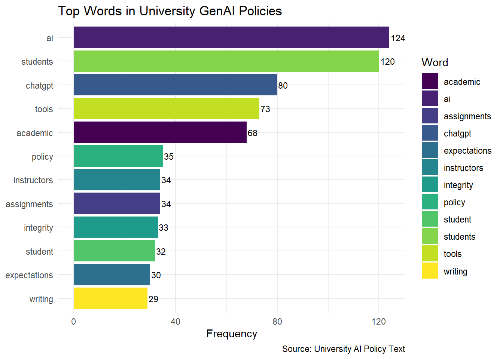

# Install and load the rvest package
install.packages("rvest")
library(rvest)Text Data
2.1 Overview
In social sciences, analyzing text data is usually considered the “job” of qualitative researchers. Traditionally, qualitative research involves identifying patterns in non-numeric data, and this pattern recognition is typically done manually. This process is time-intensive but can yield rich research results. Traditional methods for analyzing text data involve human coding and can include direct (e.g., books, online texts) or indirect sources (e.g., interview transcripts).
With the advent of new software, we can capture and analyze text data in ways that were previously not possible, such as web scraping, accessing social media APIs, or downloading large online documents. Given the increased (opportunities for collecting and) size of text data, analysis now can benefit from computational approaches (e.g., dictionary-based, frequency-based, machine learning) that go beyond manual coding. As we discussed on the front matter of the book, these computational methods allow social scientists to ask new types of research questions, expanding the scope and depth of possible insights.
Disclaimer: While resources are available that discuss these analysis methods in depth, this book aims to provide a practical guide for social scientists, using data they will likely encounter. Our goal is to present a “cookbook” for guiding research projects through real-world examples.
2.2 Accessing Text Data
Nowadays, text can be found and collected in many different ways. For example, social media can serve as rich with text data (e.g., Reddit posts), likewise text created in classrooms, especially online (e.g., every student writing) can become part of text data. In this section, we will cover a few basic ways of accessing text data. Please note that although we cover some prominent ways, this is by no means an exhaustive list. Therefore, please refer to the additional resources section at the end of the section to dive deeper.
2.2.1 Web Scraping (Unstructured or API)
What is Web Scraping?
Web scraping refers to the automated process of extracting data from web pages. It is particularly useful when dealing with extensive lists of websites that would be tedious to mine manually. A typical web scraping program follows these steps:
- Loads a webpage.
- Downloads the HTML or XML structure.
- Identifies the desired data.
- Converts the data into a format suitable for analysis, such as a data frame.
In addition to text, web scraping can also be used to download other content types, such as audio-visual files.
Is Web Scraping Legal?
Web scraping was common in the early days of the internet, but with the increasing value of data, legal norms have evolved. To avoid legal issues, check the “Terms of Service” for specific permissions on the website, often accessible via “robots.txt” files. Consult legal advice when in doubt.
Reading a Web Page into R
Once permissions are confirmed, the first step in web scraping is to download the webpage’s source code into R, typically using the rvest package by Hadley Wickham.
To demonstrate, we will scrape a simple Wikipedia page. Static pages, which lack interactive elements like JavaScript, are simpler to scrape. You can view the page’s HTML source in your browser by selecting Developer Tools > View Source.
# Load the webpage
wikipedia_page <- read_html("https://en.wikipedia.org/wiki/World_Health_Organization_ranking_of_health_systems_in_2000")
# Verify that the webpage loaded successfully
wikipedia_pageParsing HTML
The next challenge is extracting specific information from the HTML structure. HTML files have a “tree-like” format, allowing us to target particular sections. Use your browser’s “Developer Tools” to inspect elements and locate the data. Right-click the desired element and select Inspect to view its structure.
To isolate data sections within the HTML structure, identify the XPath or CSS selectors. For instance:
# Extract specific section using XPath
section_of_wikipedia <- html_node(wikipedia_page, xpath='//*[@id="mw-content-text"]/div/table')
head(section_of_wikipedia)To convert the extracted section into a data frame, use html_table():
# Convert the extracted data into a table
health_rankings <- html_table(section_of_wikipedia)
head(health_rankings[ , (1:2)]) # Display the first two columnsParsing with CSS Selectors
For more complex web pages, CSS selectors can be an alternative to XPath. Tools like Selector Gadget can help identify the required CSS selectors.
For example, to scrape event information from Duke University’s main page:
# Load the webpage
duke_page <- read_html("https://www.duke.edu")
# Extract event information using CSS selector
duke_events <- html_nodes(duke_page, css="li:nth-child(1) .epsilon")
html_text(duke_events)Scraping with Selenium
For tasks involving interactive actions (e.g., filling search fields), use RSelenium, which enables automated browser operations.
To set up Selenium, install the Java SE Development Kit and Docker. Then, start Selenium in R:
# Install and load RSelenium
install.packages("RSelenium")
library(RSelenium)
# Start a Selenium session
rD <- rsDriver()
remDr <- rD$client
remDr$navigate("https://www.duke.edu")To automate data entry, identify the CSS selector for the search box and input the query:
# Find the search box element and enter a query
search_box <- remDr$findElement(using = 'css selector', 'fieldset input')
search_box$sendKeysToElement(list("data science", "\uE007")) # "\uE007" represents Enter keyWeb Scraping within a Loop
To scrape multiple pages, embed the code within a loop to automate tasks across different URLs. Since each site may have a unique structure, generalized scraping can be time-intensive and error-prone. Implement error handling to manage interruptions.
When to Use Web Scraping
Web scraping is appropriate if:
- Page structure is consistent across sites: For example, a government site with date suffixes but a uniform layout.
- Manual data collection is prohibitive: For extensive text or embedded tables.
When feasible, consider alternatives like APIs or data-entry services (e.g., Amazon Mechanical Turk) for better efficiency and legal compliance.
What is an API?
An Application Programming Interface (API) is a set of protocols that allows computers to communicate and exchange information. A common type is the REST API, where one machine sends a request, and another returns a response. APIs provide standardized access to data, services, and functionalities, making them essential in software development.
When to Use an API
APIs are commonly used for:
- Integrating with Third-Party Services: APIs connect applications to services like payment gateways or social media.
- Accessing Data: APIs retrieve data from systems or databases (e.g., real-time weather data).
- Automating Tasks: APIs automate processes within applications, such as email marketing.
- Building New Applications: APIs allow developers to build new apps or services (e.g., a mapping API for navigation).
- Streamlining Workflows: APIs enable seamless communication and data exchange across systems.
Using Reddit API with RedditExtractoR
Reddit is a social media platform featuring a complex network of users and discussions, organized into “subreddits” by topic. RedditExtractoR, an R package, enables data extraction from Reddit to identify trends and analyze interactions.
# Install and load RedditExtractoR
install.packages("RedditExtractoR")
library(RedditExtractoR)
# Access data from the GenAI subreddit
GenAI_reddit <- find_thread_urls(subreddit = "GenAI", sort_by = "new", period = "day")
view(GenAI_reddit)2.2.2 Audio Transcripts (Zoom, etc.)
Audio transcripts are a rich source of text data, especially useful for capturing spoken content from meetings, interviews, or webinars. Many platforms, such as Zoom, provide automated transcription services that can be downloaded as text files for analysis. By processing these transcripts, researchers can analyze conversation themes, sentiment, or other linguistic features. Here’s how to access and prepare Zoom transcripts for analysis in R.
Key Steps for Extracting Text Data from Audio Transcripts
- Access the Zoom Transcript
- Log in to your Zoom account.
- Navigate to the “Recordings” section.
- Select the recording you wish to analyze and download the “Audio Transcript” file.
- Import the Transcript into R
Once the file is downloaded, you can load it into R for analysis. Depending on the file format (usually a.txtfile with tab or comma delimiters), useread.table(),read.csv(), or functions from thereadrpackage to load the data.
# Load the transcript into R
transcript_data <- read.table("path/to/your/zoom_transcript.txt", sep = "\t", header = TRUE)Adjust the sep parameter based on the delimiter used in the transcript file (typically \t for tab-delimited files).
Data Cleaning (if necessary)
Clean up the text data to remove unnecessary characters, standardize formatting, and prepare it for further analysis.- Remove Unwanted Characters
Usegsub()to eliminate special characters and punctuation, keeping only alphanumeric characters and spaces.
# Remove special characters transcript_data$text <- gsub("[^a-zA-Z0-9 ]", "", transcript_data$text)- Convert Text to Lowercase
Standardize text to lowercase for consistency in text analysis.
- Remove Unwanted Characters
# Convert text to lowercase
transcript_data$text <- tolower(transcript_data$text)2.2.3 PDF
PDF files are a valuable source of text data, often found in research publications, government documents, and industry reports. We’ll explore two main methods for extracting text from PDFs:
Extracting from Local PDF Files: This method involves accessing and parsing text from PDF files stored locally, providing tools and techniques to efficiently retrieve text data from offline documents.
Downloading and Extracting PDF Files: This approach covers downloading PDFs from online sources and extracting their text. This method is useful for scraping publicly available documents from websites or databases for research purposes.
PDF Data Extractor (PDE)
For more advanced PDF text extraction and processing, you can use the PDF Data Extractor (PDE) package. This package provides tools for extracting text data from complex PDF documents, supporting additional customization options for text extraction. PDE is a R package that easily extracts information and tables from PDF files. The PDE_analyzer_i() performs the sentence and table extraction while the included PDE_reader_i() allows the user-friendly visualization and quick-processing of the obtained results.
Steps for Extracting Text from Local PDF Files
- Install and Load the
pdftoolsPackage
Start by installing and loading thepdftoolspackage, which is specifically designed for reading and extracting text from PDF files in R.
install.packages("pdftools")
library(pdftools)- Read the PDF as a Text File
Use thepdf_text()function to read the PDF file into R as a text object. This function returns each page as a separate string in a character vector.
txt <- pdf_text("path/to/your/file.pdf")- Extract Text from a Specific Page
To access a particular page from the PDF, specify the page number in the text vector. For example, to extract text from page 24:
page_text <- txt[24] # page 24- Extract Rows into a List
If the page contains a table or structured text, use thescan()function to read each row as a separate element in a list. ThetextConnection()function converts the page text for processing.
rows <- scan(textConnection(page_text), what = "character", sep = "\n")- Split Rows into Cells
To further parse each row, split it into cells by specifying the delimiter, such as whitespace (using"\\s+"). This converts each row into a list of individual cells.
row <- unlist(strsplit(rows[24], "\\s+")) # Example with the 24th rowSteps for Downloading and Extracting Text from PDF Files
- Download the PDF from the Web
Use thedownload.file()function to download the PDF file from a specified URL. Set the mode to"wb"(write binary) to ensure the file is saved correctly.
link <- paste0(
"http://www.singstat.gov.sg/docs/",
"default-source/default-document-library/",
"publications/publications_and_papers/",
"cop2010/census_2010_release3/",
"cop2010sr3.pdf"
)
download.file(link, "census2010_3.pdf", mode = "wb")- Read the PDF as a Text File
After downloading, read the PDF into R as a text object using thepdf_text()function from thepdftoolspackage. Each page of the PDF will be stored as a string in a character vector.
txt <- pdf_text("census2010_3.pdf")- Extract Text from a Specific Page
Access the desired page (e.g., page 24) by specifying the page number in the character vector.
page_text <- txt[24] # Page 24- Extract Rows into a List
Use thescan()function to split the page text into rows, with each row representing a line of text in the PDF. This creates a list where each line from the page is an element.
rows <- scan(textConnection(page_text), what = "character", sep = "\n")- Loop Through Rows and Extract Data
Starting from a specific row (e.g., row 7), loop over each row. For each row:- Split the text by spaces (
"\\s+") usingstrsplit(). - Convert the result to a vector with
unlist(). - If the third cell in the row is not empty, store the second cell as
nameand the third cell astotal, converting it to a numeric format after removing commas.
- Split the text by spaces (
name <- c()
total <- c()
for (i in 7:length(rows)) {
row <- unlist(strsplit(rows[i], "\\s+"))
if (!is.na(row[3])) {
name <- c(name, row[2])
total <- c(total, as.numeric(gsub(",", "", row[3])))
}
}2.2.4 Survey, Discussions, etc.
Surveys and discussion posts are valuable sources of text data in social science research, providing insights into participants’ perspectives, opinions, and experiences. These data sources often come from open-ended survey responses, online discussion boards, or educational platforms. Extracting and preparing text data from these sources can reveal recurring themes, sentiment, and other patterns that support both quantitative and qualitative analysis. Below are key steps and code examples for processing text data from surveys and discussions in R.
Key Steps for Processing Survey and Discussion Text Data
- Load the Data
Survey and discussion data are typically stored in spreadsheet formats like CSV. Begin by loading this data into R for processing. Here,readris used for reading CSV files withread_csv().
# Install and load necessary packages
install.packages("readr")
library(readr)
# Load data
survey_data <- read_csv("path/to/your/survey_data.csv")- Extract Text Columns
Identify and isolate the relevant text columns. For example, if the text data is in a column named “Response,” you can create a new vector for analysis.
# Extract text data from the specified column
text_data <- survey_data$ResponseData Cleaning
Prepare the text data by cleaning it, removing any unnecessary characters, and standardizing the text. This includes removing punctuation, converting text to lowercase, and handling extra whitespace.- Remove Unwanted Characters
Usegsub()from base R to remove any non-alphanumeric characters, retaining only words and spaces.
- Remove Unwanted Characters
# Remove special characters
text_data <- gsub("[^a-zA-Z0-9 ]", "", text_data)- Convert to Lowercase
Standardize the text by converting all characters to lowercase.
# Convert text to lowercase
text_data <- tolower(text_data)- Remove Extra Whitespace
Remove any extra whitespace that may be left after cleaning.
# Remove extra spaces
text_data <- gsub("\\s+", " ", text_data)- Tokenization and Word Counting (Optional)
If further analysis is needed, such as frequency-based analysis, split the text into individual words (tokenization) or count the occurrence of specific words. Here,dplyris used to organize the word counts.
# Install and load necessary packages
install.packages("dplyr")
library(dplyr)
# Tokenize and count words
word_count <- strsplit(text_data, " ") %>%
unlist() %>%
table() %>%
as.data.frame()2.3 Frequency-based Analysis
In the following section, we will provide a “recipe” for the social scientist interested in these new methods of analyzing text data to get you from the initial stages of getting the data to running the analyses and the write up. Often left out is also a research question that suits or requires a method. Since we have a data and method-centric approach here, we will backtrack and also provide a research question, so that you can model after it in your own work. Finally, we will provide a sample results and discussions section.
2.3.1 Purpose
The purpose of the frequency-based approach is to count the number of words as they appear in a text file, whether it is a collection of tweets, documents, or interview transcripts. This approach aligns with the frequency-coding method (e.g., Saldaña ,2021) and can supplement human coding by revealing the most/least commonly occurring words, which can then be compared across dependent variables.
Case Study: Frequency-Based Analysis of GenAI USage Guidelines in Higher Education
As AI writing tools like ChatGPT become more prevalent, educators are working to understand how best to integrate them within academic settings, while many students and instructors remain uncertain about acceptable use cases. Our research into AI usage guidelines from the top 100 universities in North America aims to identify prominent themes and concerns in institutional policies regarding GenAI.
2.3.2 Sample Research Questions
To investigate the nature of AI use policies within higher education institutions, in this study, our research questions are:
- RQ1: What are the most frequently mentioned words in university GenAI writing usage policies?
- RQ2: Which keywords reflect common concerns or focal points related to GenAI writing usage in academic settings?
2.3.3 Sample Methods
Data Source
The dataset consists of publicly available AI policy texts from 100 universities(USA), the data has been downloaded and saved as a CSV file for analysis. –we might have to write more here to model how a research should be describing the data from its acquisition to use for research.
Data Analysis
In order to analyze the data we used xyz, —-let’s provide a sample write up for the researcher to adapt.
2.3.4 Analysis
Step 1: Load Required Libraries
Install and load libraries for data processing, visualization, and word cloud generation.
# Install necessary packages if not already installed
#install.packages(c("tibble", "dplyr", "tidytext", "ggplot2", "viridis","tm",wordcloud" "wordcloud2","webshot"))
# Load libraries
library(readr)
library(tibble)
library(dplyr)
library(tidytext)
library(ggplot2)
library(viridis)
library(tm)
library(wordcloud)
library(wordcloud2)
library(webshot)Step 2: Load Data
Read the CSV file containing policy texts from the top 100 universities.
# Load the dataset
university_policies <- read_csv("University_GenAI_Policy_Stance.csv")Step 3: Tokenize Text and Count Word Frequency
Process the text data by tokenizing words, removing stop words, and counting word occurrences.
# Tokenize text, remove stop words, and count word frequencies
word_frequency <- university_policies %>%
unnest_tokens(word, Stance) %>% # Tokenize the 'Policy_Text' column
anti_join(stop_words) %>% # Remove common stop words
count(word, sort = TRUE) # Count and sort words by frequency
word_frequency# A tibble: 1,108 × 2
word n
<chr> <int>
1 ai 124
2 students 120
3 chatgpt 80
4 tools 73
5 academic 68
6 policy 35
7 assignments 34
8 instructors 34
9 integrity 33
10 student 32
# ℹ 1,098 more rowsStep 4: Create a Word Cloud
Generate a word cloud to visualize the frequency of words in a circular shape.
# Create and display the GenAI usage Stance wordcloud
wordcloud(words = word_frequency$word, freq = word_frequency$n, scale = c(4, 0.5), random.order = FALSE, min.freq = 10, colors = brewer.pal(8, "Dark2"), rot.per = 0.35)
Step 5: Visualize Top 12 Words in University Policies
Select the top 12 most frequent words and create a bar chart to visualize the distribution.
# Select the top 12 words
top_words <- word_frequency %>% slice(1:12)
# Generate the bar chart
policy_word_chart <- ggplot(top_words, aes(x = reorder(word, n), y = n, fill = word)) +
geom_bar(stat = "identity") +
coord_flip() +
theme_minimal() +
labs(
title = "Top Words in University GenAI Policies",
x = NULL,
y = "Frequency",
caption = "Source: University AI Policy Text",
fill = "Word"
) +
scale_fill_viridis(discrete = TRUE) +
geom_text(aes(label = n), vjust = 0.5, hjust = -0.1, size = 3)
# Print the bar chart
print(policy_word_chart)
2.3.5 Results and Discussions
RQ1: What are the most frequently mentioned words in university GenAI writing usage policies?
The results of the frequency analysis showed that keywords such as “assignment,” “student,” and “writing” were among the most commonly mentioned terms across AI policies at 100 universities. This emphasis reflects a focus on using AI tools to support student learning and enhance teaching content. The frequent mention of these words suggests that institutions are considering the role of AI in academic assignments and course design, indicating a strategic commitment to integrating AI within educational tasks and student interactions.RQ2: Which keywords reflect common concerns or focal points related to GenAI writing usage in academic settings?
The analysis of the top 12 frequently mentioned terms highlighted additional focal points, including “tool,” “academic,” “instructor,” “integrity,” and “expectations.” These terms reveal concerns around the ethical use of AI tools, the need for clarity in academic applications, and the central role of instructors in AI policy implementation. Keywords like “integrity” and “expectations” emphasize the importance of maintaining academic standards and setting clear guidelines for AI use in classrooms, while “instructor” underscores the influence faculty members have in shaping AI-related practices. Together, these terms reflect a commitment to transparent policies that support ethical and effective AI integration, enhancing the academic experience for students.
2.4 Dictionary-based Analysis
2.4.1 Purpose
The purpose of dictionary-based analysis in text data is to assess the presence of predefined categories, like emotions or sentiments, within the text using lexicons or dictionaries. This approach allows researchers to quantify qualitative aspects, such as positive or negative sentiment, based on specific words that correspond to these categories.
Case:
In this analysis, we examine the stance of 100 universities on the use of GenAI by applying the Bing sentiment dictionary. By analyzing sentiment scores, we aim to identify the general tone in these policies, indicating whether the institutions’ attitudes toward GenAI are predominantly positive or negative.
2.4.2 Sample Research Questions
- RQ: What is the dominant sentiment expressed in GenAI policy texts across universities, and is it primarily positive or negative?
2.4.3 Analysis
Step 1: Install and Load Necessary Libraries
First, install and load the required packages for text processing and visualization.
# Install necessary packages if not already installed
#install.packages(c("tidytext","tidyverse" "dplyr", "ggplot2", "tidyr"))
# Load libraries
library(tidytext)
library(tidyverse)
library(dplyr)
library(ggplot2)
library(tidyr)Step 2: Load and Prepare Data(same as 2.3)
Load the GenAI policy stance data from a CSV file. Be sure to update the file path as needed. we use the same data as 2.3.
# Load the dataset (replace "University_GenAI_Policy_Stance.csv" with the actual file path)
university_policies <- read_csv("University_GenAI_Policy_Stance.csv")
# Tokenize text, remove stop words, and count word frequencies
word_frequency <- university_policies %>%
unnest_tokens(word, Stance) %>% # Tokenize the 'Policy_Text' column
anti_join(stop_words) %>% # Remove common stop words
count(word, sort = TRUE) # Count and sort words by frequency
word_frequencyStep 3: Tokenize Text Data and Apply Sentiment Dictionary
Tokenize the policy text data to separate individual words. Then, use the Bing sentiment dictionary to label each word as positive or negative.
# Tokenize 'Stance' column and apply Bing sentiment dictionary
sentiment_scores <- word_frequency %>%
inner_join(get_sentiments("bing")) %>% # Join with Bing sentiment lexicon
pivot_wider(names_from = sentiment, values_from = n, values_fill = 0) %>%
mutate(sentiment_score = positive - negative) # Calculate net sentiment score
sentiment_scores# A tibble: 142 × 4
word positive negative sentiment_score
<chr> <int> <int> <int>
1 honor 18 0 18
2 cheating 0 11 -11
3 dishonesty 0 10 -10
4 guidance 9 0 9
5 honesty 7 0 7
6 intelligence 7 0 7
7 transparent 7 0 7
8 violation 0 7 -7
9 encourage 6 0 6
10 difficult 0 5 -5
# ℹ 132 more rowsStep 4: Create a Density Plot for Sentiment Distribution
Visualize the distribution of sentiment scores with a density plot, showing the prevalence of positive and negative sentiments across university policies.
# Generate a density plot of sentiment scores
density_plot <- ggplot(sentiment_scores, aes(x = sentiment_score, fill = sentiment_score > 0)) +
geom_density(alpha = 0.5) +
scale_fill_manual(values = c("red", "green"), name = "Sentiment",
labels = c("Negative", "Positive")) +
labs(
title = "Density Plot of University AI Policy Sentiment",
x = "Sentiment Score",
y = "Density",
caption = "Source: University Policy Text"
) +
theme_minimal() +
theme(
plot.title = element_text(face = "bold", size = 20),
axis.text = element_text(size = 14),
axis.title = element_text(face = "bold", size = 16),
plot.caption = element_text(size = 12)
)
# Print the plot
print(density_plot)2.4.4 Results and Discussions
RQ: What is the dominant sentiment expressed in GenAI policy texts across universities, and is it primarily positive or negative?
The dictionary-based sentiment analysis reveals the prevailing sentiments in university policies on GenAI usage. Using the Bing lexicon to assign positive and negative scores, the density plot illustrates the distribution of sentiment scores across the 100 institutions.The results indicate a balanced perspective with a slight tendency toward positive sentiment, as reflected by a higher density of positive scores. This analysis provides insights into the varying degrees of acceptance and caution universities adopt in their AI policy frameworks, demonstrating the diverse stances that shape institutional AI guidelines.
2.5 Clustering-Based Analysis
Clustering-based analysis involves grouping similar text documents or text segments into clusters based on their underlying topics or themes. This approach is particularly useful for identifying dominant themes in text data, such as university AI policy documents.
2.5.1 Purpose
Purpose: The goal of clustering-based analysis is to uncover latent themes in text data using unsupervised machine learning techniques. Topic modeling is one popular method for clustering documents into groups based on their content.
Case: Using the GenAI policy texts from 100 universities, we apply Latent Dirichlet
Allocation (LDA) to identify dominant themes in these policy documents. This analysis will help categorize policies into overarching themes, such as academic integrity, student support, and instructor discretion.
2.5.2 Sample Research Questions
- RQ1: What are the prominent themes present in university policies regarding GenAI usage Stance?
- RQ2: How do these themes reflect the key concerns or opportunities for intergrating GenAI in higher education?
2.5.3 Analysis
Step 1: Install and Load Necessary Libraries
Install and load the required libraries for text processing and topic modeling.
# Install necessary packages
#install.packages(c("dplyr", "tidytext", "topicmodels", "ggplot2"))
# Load libraries
library(dplyr)
library(tidytext)
library(topicmodels)
library(ggplot2)Step 2: Prepare the Data
Load the data and create a document-term matrix (DTM) for topic modeling.
# Load the dataset
university_policies <- read_csv("University_GenAI_Policy_Stance.csv")
# Tokenize text data and count word frequencies
word_frequency <- university_policies %>%
unnest_tokens(word, Stance) %>% # same as section 2.3
anti_join(stop_words) %>% # Remove common stop words
count(word, sort = TRUE) # Count and sort words by frequency
word_frequency# A tibble: 1,108 × 2
word n
<chr> <int>
1 ai 124
2 students 120
3 chatgpt 80
4 tools 73
5 academic 68
6 policy 35
7 assignments 34
8 instructors 34
9 integrity 33
10 student 32
# ℹ 1,098 more rows# Creating Documents - Word Frequency Matrix
gpt_dtm <- word_frequency %>%
group_by(word) %>%
mutate(id = row_number()) %>%
ungroup() %>%
cast_dtm(document = "id", term = "word", value = "n")library(topicmodels)
library(ggplot2)
# Define range of k values
k_values <- c(2, 3, 4, 5)
# Initialize a data frame to store perplexities
perplexities <- data.frame(k = integer(), perplexity = numeric())
# Calculate perplexity for each k
for (k in k_values) {
lda_model <- LDA(gpt_dtm, k = k, control = list(seed = 1234)) # Fit LDA model
perplexity_score <- perplexity(lda_model, gpt_dtm) # Calculate perplexity
perplexities <- rbind(perplexities, data.frame(k = k, perplexity = perplexity_score))
}
# Plot perplexity vs number of topics
ggplot(perplexities, aes(x = k, y = perplexity)) +
geom_line() +
geom_point() +
labs(
title = "Perplexity vs Number of Topics",
x = "Number of Topics (k)",
y = "Perplexity"
) +
theme_minimal()Step 3: Fit the LDA Model
Fit an LDA model with k = 3 topics.
# Converting document-word frequency matrices to sparse matrices
gpt_dtm_sparse<- as(gpt_dtm, "matrix")
# Fit the LDA model
lda_model <- LDA(gpt_dtm_sparse, k = 3, control = list(seed = 1234))
# View model results
gpt_policy_topics_k3 <- tidy(lda_model, matrix = "beta")
print(gpt_policy_topics_k3)# A tibble: 3,324 × 3
topic term beta
<int> <chr> <dbl>
1 1 ai 0.0408
2 2 ai 0.00593
3 3 ai 0.0650
4 1 students 0.0435
5 2 students 0.0635
6 3 students 0.0151
7 1 chatgpt 0.0396
8 2 chatgpt 0.0248
9 3 chatgpt 0.0126
10 1 tools 0.0197
# ℹ 3,314 more rowsStep 4: Visualize Topics
Extract the top terms for each topic and visualize them.
# Visualizing top terms for each topic
gpt_policy_ap_top_terms_k3 <- gpt_policy_topics_k3 %>%
group_by(topic) %>%
slice_max(beta, n = 10) %>%
ungroup() %>%
arrange(topic, -beta)
gpt_policy_ap_top_terms_k3 %>%
mutate(term = reorder_within(term, beta, topic)) %>%
ggplot(aes(beta, term, fill = factor(topic))) +
geom_col(show.legend = FALSE) +
facet_wrap(~ topic, scales = "free") +
scale_y_reordered()2.5.4 Results and Discussions
Research Question 1:
What are the prominent themes present in university policies regarding GenAI usage?
Answer:
The topic modeling analysis revealed three distinct themes in the university GenAI policies:
Theme 1: Student-Centric Guidelines and Ethical Considerations
Key terms:
students,integrity,tools,instructors,assignmentThis theme emphasizes student usage of GenAI in academic settings, with a focus on ethics (
integrity) and guidelines for instructors to manage assignments involving AI tools.
Theme 2: Academic Standards and Faculty Expectations
Key terms:
students,academic,faculty,honor,expectationsThis theme focuses on maintaining academic integrity and clarifying expectations for faculty and students regarding GenAI usage in assignments and assessments.
Theme 3: Policy-Level Governance and Technology Integration
Key terms:
ai,tools,policy,learning,generativeThis theme revolves around institutional policies on AI integration, highlighting broader governance strategies and how generative AI (like GenAI) fits into learning environments.
Research Question 2:
How do these themes reflect the key concerns or opportunities for integrating GenAI in higher education?
Answer:
The identified themes reflect both concerns and opportunities:
Concerns:
Theme 1: Highlights the ethical challenges, such as ensuring academic integrity when students use AI tools in their coursework. Institutions are keen on setting clear guidelines for both students and instructors to avoid misuse.
Theme 2: Underlines the potential for conflict between maintaining academic standards (
honor,expectations) and leveraging AI to support learning. This shows a cautious approach to integrating AI while upholding traditional values.Theme 3: Raises policy-level questions on AI governance, such as whether existing institutional frameworks are adequate to regulate emerging generative AI technologies.
Opportunities:
Theme 1: Presents a chance to redefine how students interact with AI tools to foster responsible and innovative usage, particularly for assignments and creative tasks.
Theme 2: Encourages collaboration between faculty and administration to develop robust expectations and support systems for integrating AI in the classroom.
Theme 3: Offers a strategic opportunity for universities to lead in AI adoption by establishing comprehensive policies that guide AI’s role in education and research.
Discussion:
The topic modeling results suggest that universities are navigating a complex landscape of opportunities and challenges as they incorporate GenAI into academic contexts. While student-centric policies aim to balance innovation with ethical considerations, institutional-level themes signal the need for governance frameworks to ensure responsible AI use. These findings indicate that higher education institutions are positioned to play a pivotal role in shaping the future of generative AI in learning, provided they address the ethical, pedagogical, and policy challenges identified in this analysis.
References:
Saldaña, J. (2021). Coding techniques for quantitative and mixed data. The Routledge reviewer’s guide to mixed methods analysis, 151-160.